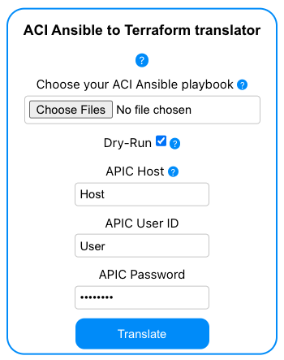
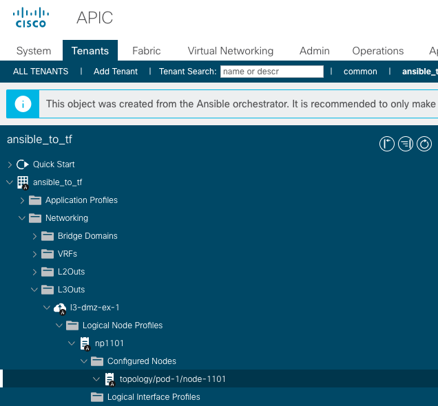

Module 1¶
Instructions¶
1. Starting the Translator Application¶
Open a terminal window by pressing Ctrl-Alt-T on your keyboard or by clicking on the terminal icon on your desktop.
Navigate to the workshop/DEVWKS-2302/translator directory in your terminal by using the following command:
cd workshop/DEVWKS-2302/translator
Start the application using:
docker-compose upNavigate to the URL http://localhost:3000 in your open browser. You will see the application:

If you Do Not see the translator web application in the browser, copy and paste the following commands in the terminal and press Enter:
sudo systemctl start docker docker-compose down -v --rmi all sudo fuser -k 5000/tcp 3000/tcp docker ps -q | xargs --no-run-if-empty docker stop docker ps -a -q | xargs --no-run-if-empty docker rm docker-compose up
After you see the application window in the browser, take a moment to hover over the various elements of the translator application. Tooltips will appear with useful information and guidance to help you utilize the application.
2. Open the Cisco APIC URL¶
Refer to the handout provided. Look for the Cisco APIC URL, which is the web address you'll use to access the Cisco Application Policy Infrastructure Controller (APIC).
Open a new tab in your web browser, navigate to the APIC URL provided in the handout, and sign in using the username and password given.
Keep this page open as you will be periodically checking it to see the configuration changes made throughout the workshop.
3. Open The Playbook my_ACI_playbook.yml¶
Find my_ACI_playbook.yml inside the Module1 folder within the workshop/DEVWKS-2302 directory and review the contents of the playbook, as the tasks within it will be translated to Terraform.
4. Starting the Translation¶
Return to the web browser tab where you have the application open.
In the application window, locate the drop-down menu. From there, select my_ACI_playbook.yml which resides in the Module1 folder of the workshop/DEVWKS-2302 directory.
There is a checkbox labeled DRY_RUN. Leave this unchecked as we're going to apply the configuration in the playbook to the APIC for the first time.
Provide the APIC's details. Refer to your handout for these, and enter the APIC Host (this is the APIC's IP address), APIC User ID, and APIC Password into the corresponding fields in the application window.
Once you've entered these details, click the Translate button to start the translation process.
Upon successful completion of the translation, a dialog box will confirm the same. Click the Download Translated Files button.
Now, switch to the web browser tab where you have the APIC URL open. You should see that the configuration specified in the playbook has been successfully applied.

5. The Translated Terraform Files¶
Navigate to your Downloads folder and locate the terraform_files.zip file.
Extract the files from the terraform_files.zip file.
From the extracted files, open the Terraform file named resources.tf. This file is analogous to Ansible's my_ACI_playbook.yml and contains the desired state configuration.
Open Terraform's provider.tf. This file is analogous to Ansible's inventory file.
Also open Terraform's terraform.tfstate file. This file is a map of the configuration (pushed by Ansible from my_ACI_playbook.yml) that currently exists in your APIC. It represents the current state of your resources and serves as the source of truth.
Review these files to understand the current and desired states of your resources.
6. Executing Terraform Commands¶
Open a new terminal window. You can do this by using the Ctrl-Alt-T shortcut on your keyboard, or by clicking on the terminal icon on your desktop.
Navigate to the directory where you have extracted your Terraform files. For instance, if you extracted the files in the Downloads folder, you can change to the directory by entering the following command in the terminal:
cd Downloads/terraform_files
Initialize Terraform in your working directory with the following command:
terraform initThis command prepares your directory for other Terraform operations by downloading necessary provider plugins and creating backend data files.
Check your Terraform configuration against your actual infrastructure in APIC using the plan command:
terraform planThis command shows you what changes Terraform will make to reach the desired state defined in your configuration. Since your configuration already exists, you should see a message indicating that no changes are necessary.
Apply your Terraform configuration to your actual infrastructure with the apply command:
terraform applyThis command attempts to realize the desired state defined in your configuration. Since your configuration already matches the actual state, no changes will be made.
Now, undo the configuration applied by Ansible. We can do this using the destroy command:
terraform destroyThis command removes all resources that exist due to the current Terraform configuration. It effectively tears down the infrastructure that was built by Ansible.
Finally, return to the APIC URL in your web browser. You should see that the configuration previously applied by Ansible no longer exists.